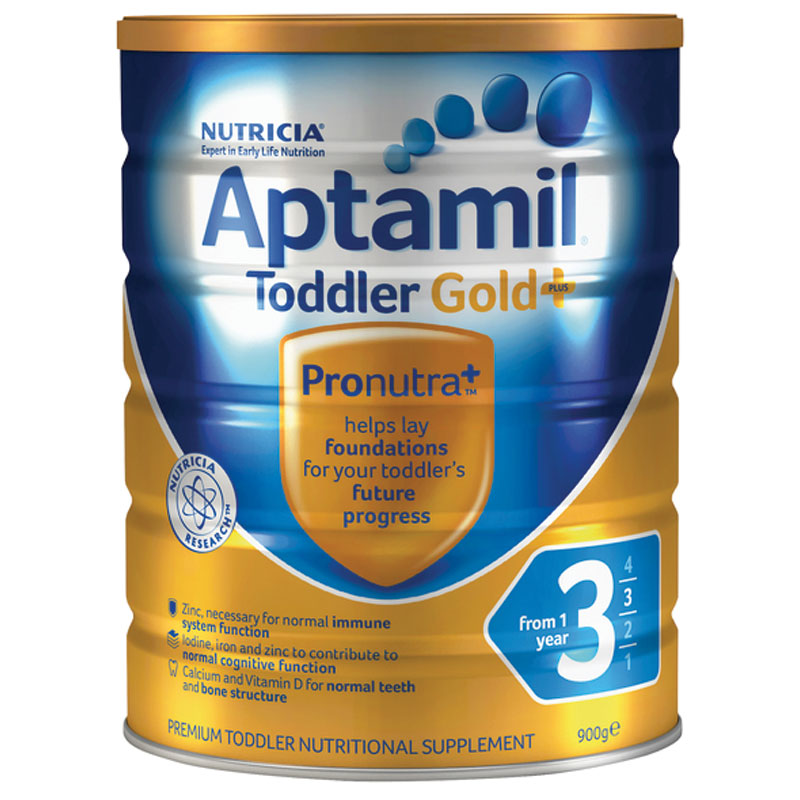
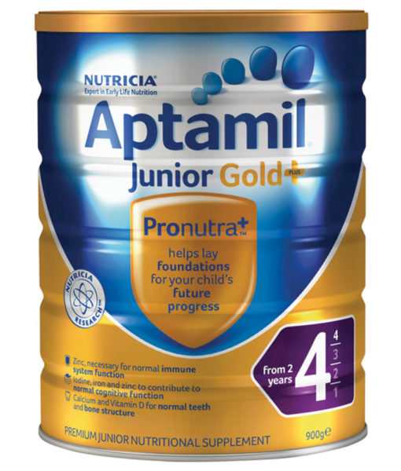

|   | Aptamil 奶粉是Karicare的最新产品，在以前的黄金奶粉基础上添加了FOS低聚果糖，GOS低聚半乳糖，有效的增加了宝宝的抵抗力和肠胃消化功能，同时增加了肠胃益生菌，保护宝宝幼嫩的肠胃，并且软化大便，很有效的改善宝宝的便秘症状! Karicare Aptamil 为最新升级的高端的爱他美配方，选择可瑞康爱他美，让您的宝宝更加健康聪明！增加25%鱼油，鱼油能帮助儿童大脑以及视力的开发。作为辅食的一部分，升级配方迎合生长期幼儿的膳食需求。全新升级配方，更全面支持儿童免疫系统。 产品特点：
○ 含有更多的Nutrica专利益生元，更好支持儿童免疫系统。 ○ 专为日常膳食摄取不足的儿童特殊设计的配方。 ○ 不单单只是提供牛奶的所有养分，更提供儿童身体成长发育所需的其他养分。 ○ 独家的配方以及独特的成分，提供免疫系统所需的各种微量元素，包括铁、锌和维生素D。 功能概述：
○ 不含蔗糖，含有比普通牛奶多十倍以上的铁质； ○ 含有丰富维他命C，帮助吸收铁质，同时提供宝宝成长所需的钙质及蛋白质； ○ 含有菊粉，帮助肠道有益菌生长，抑制有害细菌，所以对感染导致的腹泻有预防作用； ○ 含有Omega 3, DHA；DHA对宝宝的脑、眼睛及神经发育都非常重要。 主要成份：
○ 乳固形物（去盐乳清、乳清、乳糖、脱脂乳、乳清蛋白浓缩物）、大豆油、低聚合半乳糖（牛奶提取、GOS） ○ 葡萄糖、低聚果糖（长链、FOS）、大豆卵磷脂、柠檬酸、氢化钙、牛磺酸、胆碱 ○ 催化轻循环Omega-3&Omega-6脂肪酸[花生四烯酸、金枪鱼油、抗氧化剂（抗坏血酸钠、棕榈酸、维生素E）] ○ 维生素：维他命 (A, B1, B3, B6, B12, C, D, E, K1), 泛酸， Beta胡萝卜素，叶酸，生物素（维生素H） ○ 矿物质：钾、钠、钙、铁、镁、锌、猛、铜、碘、硒。 ○ 核苷：5-磷酸-胞嘧啶 、5-磷酸-鸟嘧啶、5-磷酸-腺苷、5-磷酸-次黄苷、5-磷酸-鸟苷。 适用人群：
○ 3段 1-2岁的婴幼儿。 ○ 4段 2岁以上的婴幼儿。 使用方法：
○ 请保持手的清洁和干燥； ○ 奶瓶奶嘴等用具要提前清洗消毒； ○ 将开水冷却，倒入奶瓶，建议水温38-42度（一定要先放水再放奶粉）； ○ 每50毫升水加一平勺奶粉，请使用罐中的原配勺，不要挤压，在罐口处刮平勺上多余的奶粉； ○ 盖好奶瓶，立即摇匀，在喂前请倒一滴在自己手腕上测试温度。 注意事项：
○ 切记不可用滚烫的开水冲制奶粉，这会破坏奶粉所含的营养成分。 ○ 冲制奶粉时避免上下摇晃奶瓶，应横向转圈摇，从而避免奶液起泡。 ○ Aptamil的很多有益成分是在宝宝体内合成的，因此开封后可以储存较长时间，但仍然建议尽量在一个月内用完。 ○ 每次取出奶粉后都应立即封口，常温下保存，避免潮湿、高温和阳光直射。 |